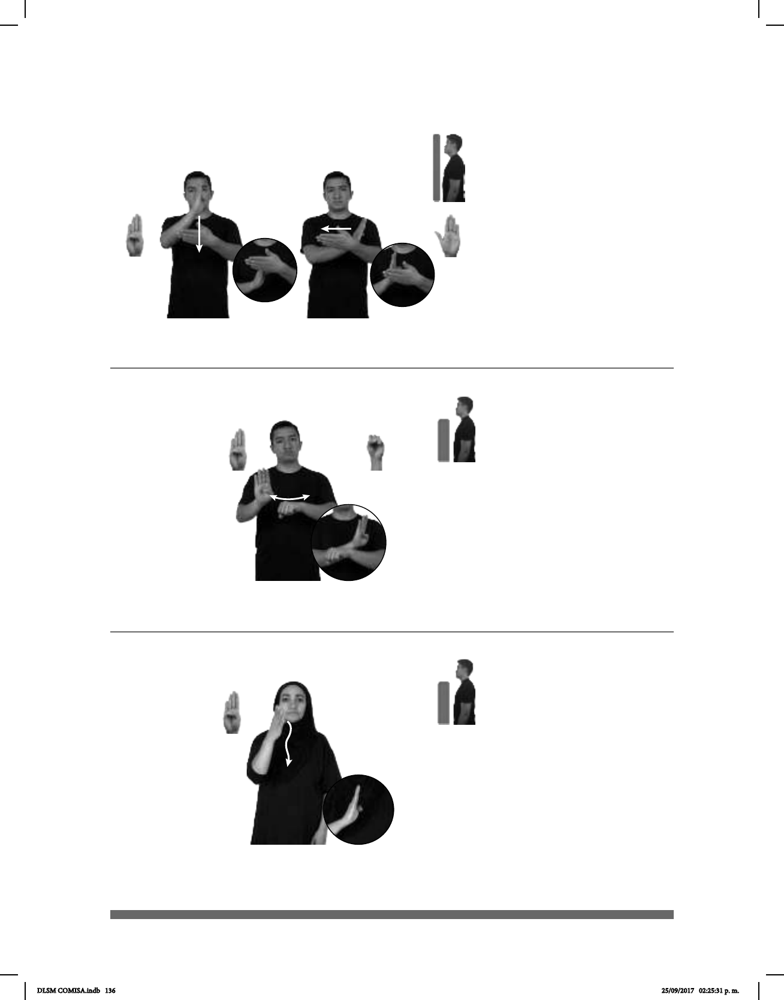

136
(B-P 76)
ALIMENTO DIFERENTE++ BENDECIR
Bendecir los alimentos.
Seña: SB
MD B-P.1, MB B-P.2
MD palma hacia la
izquierda. MB palma hacia adentro.
A la altura del pecho.
MD detrás de MB.
La MD se mueve
formando una cruz.
Simula una cruz.
v. tr. Declarar buena,
virtuosa o santa alguna cosa o a alguna
persona.
La seña se usa en la
comunidad sorda catòlica.
(B-P 77)
CUANDO pro-TÚ CUMPLIR pro-TÚ TENER BENEFICIOS
Seña: SB
MD B-P.1, MB S.1
MD palma hacia afuera,.
MB palma hacia abajo.
A la altura del pecho. MD
sobre MB del lado derecho al lado
izquierdo.
MD recto repetidamente.
Labios
protruidos.
sust. m. Bien que se hace o
se recibe.
Seña: SM
B-P.1
Palma hacia la
izquierda.
Del rostro al pecho.
La mano sigue una
trayectoria ondulada.
País ubicado en el
oeste de África cuya capital es
Porto Novo.
(B-P 78)
BENIN
allá
HABLAR FRANCÉS
En Benin se habla francés.
DLSM COMISA.indb 136 25/09/2017 02:25:31 p. m.